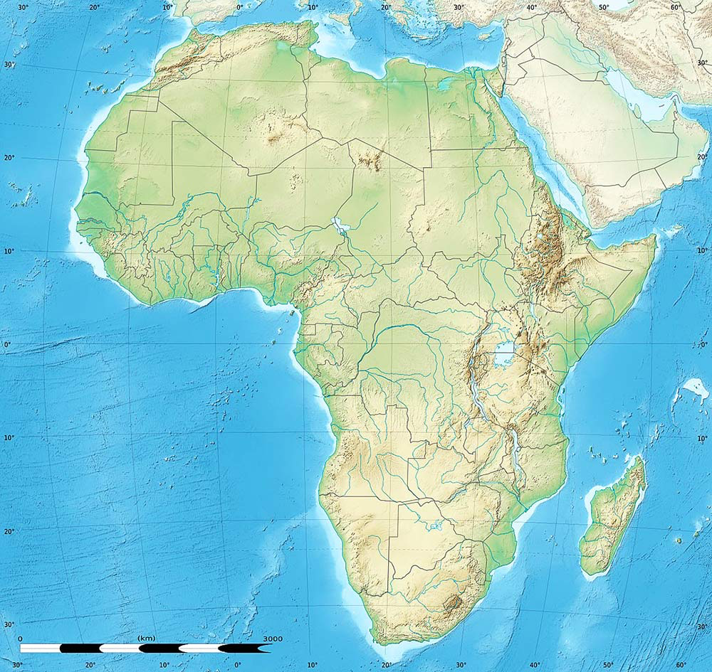

África físico — Mapa interactivo
🧠 Modo: Estudio
🔄 Reiniciar
Costero
Geográfico
Agua

1
2
3
4
5
6
7
18
20
21
22
23
25
27
28
9
10
12
13
14
15
17
30
31
32
33
34
35
36
37
39
40
41
42
43
44
45
46
*
47
48
49
50
51
52
53
54
55
56
57
58
59